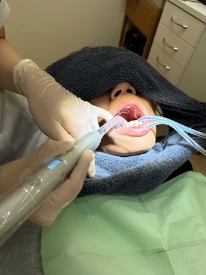
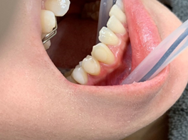
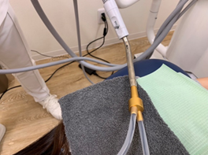

①
初診
資料採得・動画視聴・次回予約 ／ 所要約60分
›
担当
受付
DA
Dr
DH
やること
トーク例
「こちらが本日お取りしたスキャンデータです。思っていたよりも歯並びにガタつきがありますね。こういった点もきちんと踏まえて治療計画を立てていきます。」
💡 なぜ今日クロージングしないのか｜他院との構造的な違い
他院では「検査費用」を払ってから初めて治療提案を受ける。患者は判断材料がない状態で何万円も支払っている。
❌ 他院の一般的な流れ
| 初診相談料 | 3,300円〜 |
| 基本検査料 写真・レントゲン・CT等 | 33,000〜 55,000円 |
| 診断料 治療計画の立案 | 33,000円 |
| 合計（治療提案を受けるまで） | 最大 88,000円超 |
※患者さんは「払ったから続けなければ」という心理になりやすい。自由な判断ができない。
✅ 当法人の流れ
| 初診（資料採得・OHR発行・動画視聴） | 無料 |
| CT・スキャン・口腔内写真 | 無料 |
| 診断結果の説明（CC説明） | 無料 |
| 治療提案を受けるまで | ¥0 |
患者は費用ゼロで診断結果と複数プランを受け取る。「自分で選んだ」という体験が生まれる。これが信頼の起点。
スタッフ全員が理解すること：初診でクロージングしないのは「売れないから」ではない。診断もせずに提案するのは旧来のやり方。当法人は判断材料を先に渡してから、初めて提案する。それが美しい医療のあり方。
①'
初診後フォローアップ
来院間2週間の患者対応
›
担当
受付
やること
他院受診後のトーク例
「他の医院にもご相談されたとのことで、いかがでしたか？比較してみてのご質問があればぜひお聞かせください。」
⚠️
無理にクロージングしない比較した上で選んでいただける医院であることを体現する。
②③
CC説明・契約
診断資料作成（院内）→ CC説明・複数プラン提示・契約 ／ 所要60分
›
担当
Dr
カウンセラー
やること
プラン提示のトーク例
「今回〇〇様の診断をもとに、いくつかの治療プランを設計しました。それぞれ達成できることと費用・期間が異なります。一緒に見ていきましょう。」
★
不明点はその場で即答しない必ず担当Drに確認してから回答する。
④
セット（アタッチメント接着）
ZOO完全防湿下・所要60分
›
担当
Dr
DA
やること
物販トーク例
「フロスは隙間を入れているので必ず必要です。」「矯正期間中は着色しやすいのであった方がいいです。」（言い切る）
⚠️
エッチング時間を必ず計る20秒未満・40秒以上は接着力が低下する。
ZOO（防湿器具）実際の使用シーン

ZOO装着シーン（全体）

口腔内クローズアップ

バキューム接続部・機材

セット後の患者説明：マウスピースと歯ブラシによるセルフケアを指導する
⑤
経過来院
途中来院・所要30分
›
担当
Dr
DA
来院前に準備
対応内容

専用ケースへの保管を毎回確認する

装着時間（20時間以上）を患者に確認・記録する
モチベーションサポート例
「しっかり時間を守って装着しているから、歯の動きもスムーズですね。あと〇〇枚終われば大きな動きはほぼ完了します。」
⑥⑦
追加スキャン・追加セット
リファインメント / 追加AT接着30分
›
担当
Dr
DA
やること
★
初回アライナーだけで終わることはほとんどない。追加はほぼ全員に実施するので、事前に患者へ伝えておく。
⑧
チェアサイド調整 ★新プロトコル
残り3ステージのタイミング・所要30分
›
担当
Dr
やること
患者への説明例
「最終的な仕上がりをより完璧に近づけるため、ゴール直前の大切なタイミングで一度細かな調整を行います。」
⑨⑩
AT除去・保定スキャン / リテーナーセット
治療終了・保定説明
›
担当
Dr
DH
やること
リテーナーセット時のトーク例
「今日まで使っていた最後のマウスピースは、万が一リテーナーが壊れた時のために保管してください。」
⑪
保定経過 & 終了セレモニー
3〜6ヶ月ごと・2年間継続
›
担当
Dr
DH
毎回の確認（4点）
2年後：終了セレモニー
紹介トーク例（必須）
「歯並びが気になっているご友人・ご家族がいれば、ぜひご紹介ください。同じように無料で診断させていただきます。」
🏆
終了症例 → 紹介・口コミ・SNS → 次の患者へ。一人の患者が医院の広告塔になる。